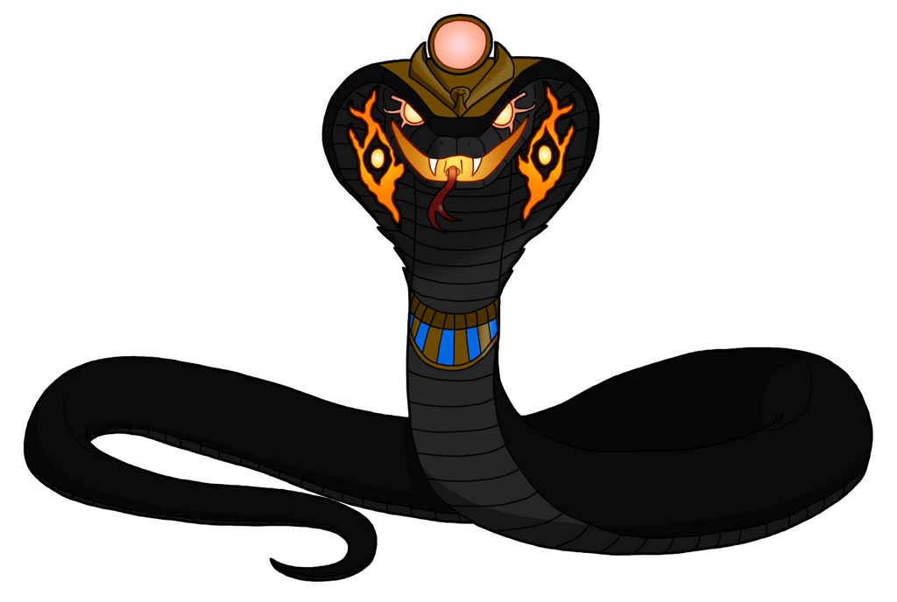
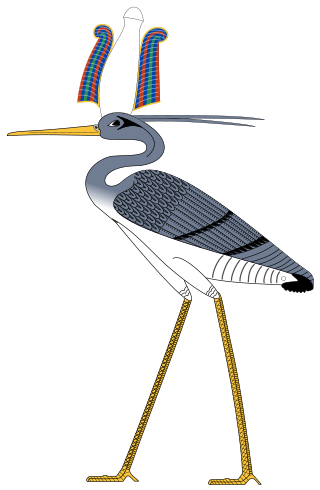
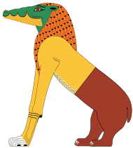
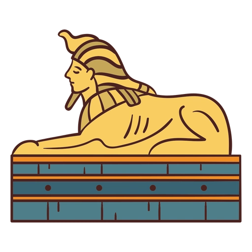
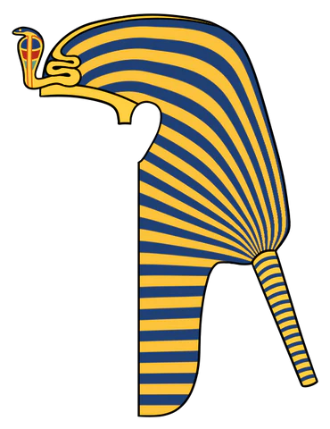
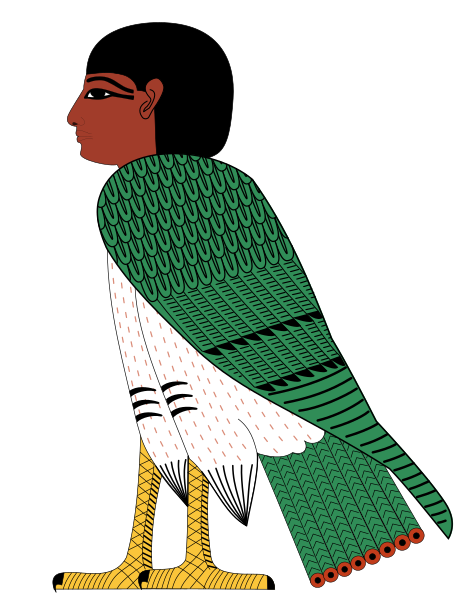

Mitologia Egípcia
Deuses, faraós e criaturas do Antigo Egito
A Criação do Mundo
A mitologia egípcia possui várias versões da criação, dependendo da cidade e do período histórico. A versão mais conhecida é a Enéade de Heliópolis, que descreve o surgimento do universo a partir das águas primordiais de Nun.
O Caos Primordial - Nun
Antes da criação, existia apenas Nun, um oceano infinito de escuridão e potencialidade. Das águas de Nun emergiu o primeiro deus, Atum, que iniciou o processo de criação.
A Enéade de Heliópolis
Esta é a principal cosmogonia egípcia, que descreve nove deuses primordiais:
- Atum - O criador, que surgiu de Nun
- Shu - O ar, criado por Atum
- Tefnut - A umidade, irmã gêmea de Shu
- Geb - A terra, filho de Shu e Tefnut
- Nut - O céu, irmã e esposa de Geb
- Osíris - Deus da morte e renascimento
- Ísis - Deusa da magia e fertilidade
- Seth - Deus do caos e do deserto
- Néftis - Deusa da morte e proteção
Atum criou Shu e Tefnut através de masturbação ou espirro, dependendo da versão. Eles por sua vez geraram Geb e Nut, cujos filhos formam a última geração da Enéade.
Outras Cosmogonias
Diferentes cidades egípcias tinham suas próprias versões da criação:
- Memphis - Ptah como criador através do pensamento e palavra
- Hermópolis - Oito deuses primordiais (Ogdóade) criando o mundo
- Elefantina - Khnum moldando seres em sua roda de oleiro
Deuses Principais
A mitologia egípcia possui centenas de deuses, muitos com formas híbridas de humanos e animais. Estes são os mais importantes:
RÁ (OU RÉ) – O Deus Sol
- Domínio: Sol, criação, rei dos deuses
- Símbolos: Disco solar, obelisco, falcão
Rá é o deus sol e criador em muitas versões. Ele viaja pelo céu em sua barca solar durante o dia e pelo submundo à noite, combatendo a serpente Apófis. Frequentemente associado a outros deuses como Amon-Rá.
OSÍRIS – Deus da Morte e Renascimento
- Domínio: Submundo, ressurreição, fertilidade
- Símbolos: Coroa Atef, crook e flail, pele verde
Osíris foi o primeiro faraó mítico, assassinado por seu irmão Seth. Sua esposa Ísis o ressuscitou temporariamente para conceber Hórus. Tornou-se senhor do Duat (submundo), simbolizando a morte e renascimento.
ÍSIS – A Grande Mãe
- Domínio: Magia, maternidade, fertilidade
- Símbolos: Trono na cabeça, nó de Ísis, asas
Ísis é a esposa de Osíris e mãe de Hórus. Ela reuniu os pedaços do corpo de Osíris após seu assassinato e o ressuscitou. Considerada a deusa mais poderosa por seu conhecimento de magia.
HÓRUS – O Deus Falcão
- Domínio: Céu, realeza, vingança
- Símbolos: Olho de Hórus, falcão, dupla coroa
Filho de Osíris e Ísis, Hórus vingou seu pai lutando contra Seth. Perdeu um olho na batalha (o Olho de Hórus, símbolo de proteção). Os faraós eram considerados encarnações de Hórus na Terra.
SETH – Deus do Caos
- Domínio: Deserto, tempestades, violência
- Símbolos: Animal de Seth, raio, cor vermelha
Irmão de Osíris, Seth o matou por inveja. Representa forças destrutivas necessárias para o equilíbrio cósmico. Apesar de ser um deus do caos, também protegia Rá durante sua viagem noturna.
THOTH – O Deus da Sabedoria
- Domínio: Conhecimento, escrita, magia
- Símbolos: Íbis, babuíno, papiro
Inventor da escrita e mediador divino, Thoth registrava os resultados da pesagem do coração no julgamento dos mortos. Também ajudou Ísis a ressuscitar Osíris e curou o olho de Hórus.
ANÚBIS – O Deus dos Mortos
- Domínio: Mumificação, cemitérios, julgamento
- Símbolos: Chacal, balança, faixas de múmia
Anúbis supervisionava o processo de mumificação e guiava as almas no além. Ele pesava o coração do falecido contra a pena de Ma'at para determinar seu destino na vida após a morte.
BASTET – A Deusa Gata
- Domínio: Proteção, fertilidade, alegria
- Símbolos: Gato, sistro, colar menat
Originalmente uma deusa leoa guerreira, Bastet tornou-se mais dócil ao longo do tempo, associada a gatos domésticos. Protegia as mulheres grávidas e afastava espíritos malignos.
PTAH – O Criador de Mênfis
- Domínio: Criação, artesãos, arquitetura
- Símbolos: Tocado branco, coluna djed, cinzel
Ptah criou o mundo através do pensamento e palavra. Patrono dos artesãos e arquitetos, era especialmente venerado em Mênfis, onde seu culto rivalizava com o de Rá.
HATHOR – A Deusa do Amor
- Domínio: Amor, música, embriaguez
- Símbolos: Chifres com disco solar, sistro, colar menat
Deusa da alegria, dança e música, Hathor era representada como vaca ou mulher com chifres. Também era uma deusa celeste que acolhia os mortos no além.
MA'AT – A Ordem Cósmica
- Domínio: Verdade, justiça, equilíbrio
- Símbolos: Pena de avestruz, balança
Ma'at representa a ordem fundamental do universo - verdade, justiça e harmonia. Seu princípio guiava os faraós e era central no julgamento dos mortos.
KHNUM – O Oleiro Divino
- Domínio: Criação, Nilo, fertilidade
- Símbolos: Roda de oleiro, carneiro, jarro
Khnum moldava os seres humanos em sua roda de oleiro a partir do barro do Nilo. Também controlava as inundações anuais do rio, essenciais para a agricultura egípcia.
Criaturas e Seres Mitológicos
Além dos deuses, a mitologia egípcia está repleta de seres fantásticos que povoam seus mitos e crenças.
APÓFIS – A Serpente do Caos
Apófis (ou Apep) é a gigantesca serpente que personifica o caos e as forças da escuridão. Todas as noites, ela tenta impedir a barca solar de Rá em sua jornada pelo submundo.
- Representa tudo o que ameaça a ordem cósmica (Ma'at)
- É combatida por Rá e outros deuses como Seth
- Seu corpo é cortado ritualmente em cerimônias
BENNU – A Fênix Egípcia
O Bennu é uma ave sagrada associada ao sol, renascimento e o ciclo das inundações do Nilo. Vive por 500 anos antes de renascer das próprias cinzas.
- Precursor do mito grego da fênix
- Associado ao deus Rá e ao ciclo solar
- Seu nome significa "ascender" ou "brilhar"
AMMIT – O Devorador
Criatura temível que habitava o Salão das Duas Verdades durante o julgamento dos mortos. Parte leão, hipopótamo e crocodilo, ela devorava os corações dos condenados.
- Não era adorada, mas temida
- Sua função era manter a ordem cósmica
- Representava a "segunda morte" (aniquilação total)
ESFINGE – O Guardião
Ser com corpo de leão e cabeça humana (geralmente do faraó), a esfinge simbolizava força e sabedoria. A Grande Esfinge de Gizé é a mais famosa.
- Guardava templos e tumbas
- Representava o poder real
- No mito grego, a Esfinge propunha enigmas
URAEUS – A Serpente Real
Cobra sagrada que adornava a coroa dos faraós, simbolizando sua autoridade e proteção divina. Representava a deusa Wadjet.
- Cuspia fogo contra os inimigos do faraó
- Simbolo de proteção e poder real
- Presente em quase todas as coroas reais
BA – A Alma em Forma de Pássaro
O Ba era uma parte da alma humana representada como um pássaro com cabeça humana que podia viajar entre o mundo dos vivos e o dos mortos.
- Manifestação da personalidade do indivíduo
- Visitava os vivos durante o dia
- Retornava à múmia à noite
Outras Criaturas Notáveis
- Serpopardos - Criaturas híbridas de serpente e leopardo
- Griffins - Mistura de leão e águia, trazidos da Mesopotâmia
- Hipogrifos - Mistura de hipopótamo, leão e crocodilo
- Os Quatro Filhos de Hórus - Protegiam os órgãos mumificados
- O Fênix Bennu - Símbolo de renascimento e ressurreição
Mitos Importantes
O Mito de Osíris
Esta é a história central da mitologia egípcia:
- Osíris governa o Egito com sabedoria
- Seu irmão Seth o mata e desmembra seu corpo
- Ísis recolhe os pedaços e o ressuscita magicamente
- Osíris concebe Hórus antes de se tornar senhor do submundo
- Hórus cresce para vingar o pai, lutando contra Seth
Este mito simboliza o ciclo de morte e renascimento, tanto da vegetação quanto do próprio Nilo.
A Jornada do Sol
Todas as noites, Rá viaja pelo Duat (submundo) em sua barca solar:
- Enfrenta Apófis, a serpente do caos
- É acompanhado por outros deuses como Seth e Ma'at
- Os mortos ajudam a empurrar a barca
- Renasce ao amanhecer como Khepri (o escaravelho)
Esta jornada simbolizava a vitória diária da ordem sobre o caos.
O Julgamento dos Mortos
Os egípcios acreditavam em um elaborado processo após a morte:
- O morto é guiado por Anúbis ao Salão das Duas Verdades
- Seu coração é pesado contra a pena de Ma'at
- Thoth registra o resultado
- Se o coração for leve, o morto é levado ao Paraíso de Osíris
- Se pesado, Ammit devora o coração (aniquilação total)
O Livro dos Mortos continha feitiços para ajudar nesta jornada.
Fatos Curiosos
Os Deuses Podiam se Fundir
Os egípcios frequentemente combinavam deuses em sínteses como:
- Amon-Rá - Fusão do deus tebano Amon com Rá
- Ptah-Sokar-Osíris - Tríplice deus funerário
- Hórus-Rá - O sol como criança divina
Isso mostrava a flexibilidade do pensamento religioso egípcio.
Animais Sagrados
Muitos animais eram considerados encarnações de deuses:
- Gatos - Associados a Bastet
- Íbis - Associados a Thoth
- Crocodilos - Associados a Sobek
- Escaravelhos - Associados a Khepri
Estes animais eram mumificados como oferendas religiosas.
O Papiro de Turim
Este documento lista todos os faraós desde os tempos míticos até a época ramessida, incluindo:
- Deuses que governaram antes dos humanos
- Os Shemsu-Hor (Seguidores de Hórus)
- Reis lendários como Menes
Mostra como mito e história se misturavam no Egito.
Os Nomes Secretos
Os egípcios acreditavam que conhecer o nome verdadeiro de algo dava poder sobre isso:
- Rá teve seu nome secreco descoberto por Ísis
- Osíris foi ressuscitado quando Ísis pronunciou seu nome
- Estatuetas de tumbas tinham os nomes dos inimigos riscados
Magia no Cotidiano
A magia (heka) permeava a vida egípcia:
- Amuletos protegiam contra doenças e perigos
- Feitiços ajudavam no parto e na agricultura
- Estatuetas de inimigos eram ritualmente destruídas
- Os deuses usavam magia para criar o mundo
O Livro dos Mortos
Na verdade chamado de "Livro de Sair para a Luz", continha:
- Feitiços para navegar o submundo
- Fórmulas para transformação divina
- Proteções contra demônios
- Oração negativa para o julgamento
Cada exemplar era personalizado para o falecido.
Deuses Locais e Nacionais
Cada cidade tinha seu próprio deus principal:
- Tebas - Amon
- Heliópolis - Rá
- Mênfis - Ptah
- Abidos - Osíris
- Elefantina - Khnum
Quando uma cidade se tornava capital, seu deus ascendia ao panteão nacional.
O Egito e o Além
Os egípcios tinham conceitos complexos sobre a vida após a morte:
- Vários componentes da alma: Ka, Ba, Akh, Ren, etc.
- O Duat (submundo) era um lugar físico abaixo do horizonte
- Osíris governava o "Campo de Juncos", um paraíso agrícola
- Os mortos precisavam de oferendas de comida e bebida
O Legado dos Faraós
Os faraós eram considerados divinos:
- Encarnação de Hórus em vida
- Unidos a Osíris após a morte
- Responsáveis por manter Ma'at (ordem cósmica)
- Intermediários entre deuses e humanos
Sua coroação era um ritual de importância cósmica.
Principais Deuses Egípcios
| Nome | Função | Representação |
|---|---|---|
| Rá (Ré) | Deus sol, criador, rei dos deuses | Disco solar, falcão, homem com cabeça de falcão |
| Osíris | Deus da morte, ressurreição, fertilidade | Homem mumificado com coroa Atef, pele verde |
| Ísis | Deusa da magia, maternidade, proteção | Mulher com trono na cabeça ou asas |
| Hórus | Deus do céu, realeza, vingança | Falcão ou homem com cabeça de falcão |
| Seth | Deus do caos, deserto, tempestades | Animal de Seth (não identificado), homem com cabeça estilizada |
| Thoth | Deus da sabedoria, escrita, magia | Íbis ou babuíno |
| Anúbis | Deus da mumificação, cemitérios | Chacal ou homem com cabeça de chacal |
| Bastet | Deusa da proteção, fertilidade, alegria | Gato ou mulher com cabeça de gato |
| Ptah | Deus da criação, artesãos | Homem mumiforme com toucado branco |
| Hathor | Deusa do amor, música, embriaguez | Vaca ou mulher com chifres e disco solar |
| Ma'at | Deusa da verdade, justiça, ordem | Mulher com pena de avestruz na cabeça |
| Khnum | Deus da criação, Nilo, fertilidade | Carneiro ou homem com cabeça de carneiro |
Cosmogonias Egípcias
| Cidade | Deus Criador | Método de Criação |
|---|---|---|
| Heliópolis | Atum | Autocriação a partir de Nun, depois masturbação/espirro |
| Hermópolis | Ogdóade (8 deuses) | Ação coletiva das forças primordiais |
| Mênfis | Ptah | Pensamento e palavra (logos) |
| Elefantina | Khnum | Modelagem em roda de oleiro |
| Tebas | Amon | Auto-gerado, depois associado a Rá |
Livros Funerários
| Nome | Período | Conteúdo |
|---|---|---|
| Textos das Pirâmides | Antigo Império | Feitiços para ajudar o faraó morto |
| Textos dos Sarcófagos | Médio Império | Feitiços para nobres e altos funcionários |
| Livro dos Mortos | Novo Império | Feitiços para qualquer pessoa que pudesse pagar |
| Livro das Cavernas | Novo Império | Descrições do submundo |
| Livro dos Portões | Novo Império | Jornada noturna de Rá |
Festivais Importantes
| Festival | Deus Honrado | Significado |
|---|---|---|
| Opet | Amon | Renovação do poder real |
| Wag | Osíris | Celebração dos mortos |
| Khoiak | Osíris | Morte e ressurreição de Osíris |
| Bast | Bastet | Fertilidade e alegria |
| Sed | Faraó | Renovação do poder real (30 anos) |